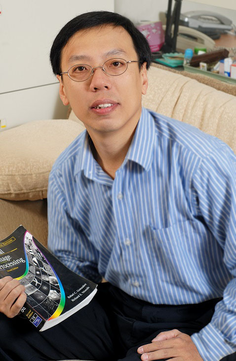
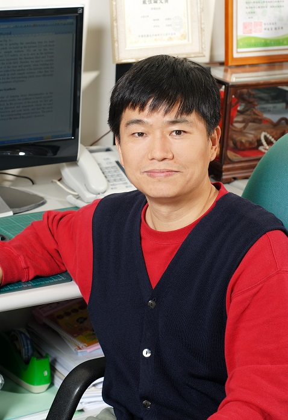
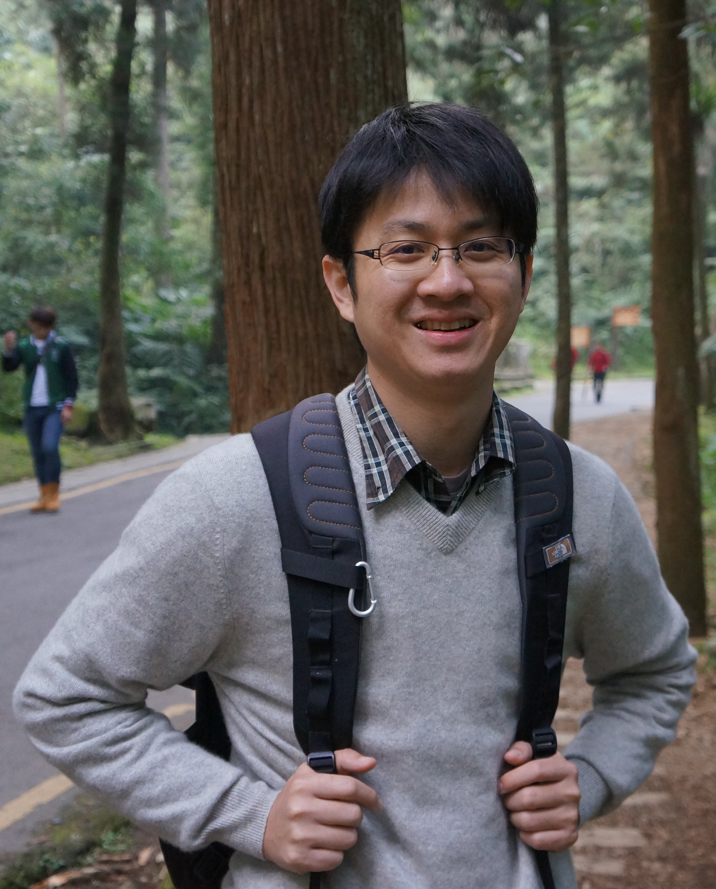

Member
Current teachers

Jiunn-Lin Wu
Professor and Head of Department
| Education | Ph.D. in Electrical Engineering, National Cheng Kung University |
| Experience | Won the 109th Academic Year Teaching Excellence II, the 109th Academic Year Excellent Labor Education Instructor, the 110th Annual Industry-Academic Outstanding Teacher II, and the 111 111-Year Industry-Academic Outstanding Teacher II, Senior Chief Engineer of ULI Information, Assistant of the Department of Information Science of National Chung Hsing University Professor, Head of Service Consulting Group of Accounting and Capital Center of National Chung Hsing University |
| Areas of Expertise | Image Processing, Machine Learning, Machine Vision, Multimedia Signal Processing, Pattern Recognition, Computational Photography |
| Phone | (04)2284-0497 ext 919 |
| Webpage | https://drphototw.wixsite.com/wujl |
| jlwu@cs.nchu.edu.tw |

Yen-Jen Chang
Professor
| Education | PhD in Information Engineering, National Taiwan University |
| Experience | Won the 108 Academic Year Service Outstanding I Teacher, Assistant Professor of the Department of Information Science, National Chung Hsing University |
| Areas of Expertise | Low Power VLSI Design, Memory Circuit Design, Embedded System, Intelligent Robot System |
| Phone | (04)2284-0497 ext 918 |
| Webpage | https://lpca.cs.nchu.edu.tw/ |
| ychang@cs.nchu.edu.tw |

Chung-Ming Wang
Professor
| Education | PhD in Information Engineering and Science, University of Leeds, UK |
| Experience | Assistant Engineer, Unity Enterprises, Research at IBM Scientific Research Center, UK |
| Areas of Expertise | Computer Graphics, Steganography, Watermarking, Color Science |
| Phone | (04)2284-0497 ext 915 |
| Webpage | http://gmvr.cs.nchu.edu.tw/cmwang |
| cmwang@cs.nchu.edu.tw |
Chun-Rong Huang
Distinguished Professor
| Education | Ph.D. in Electrical Engineering, National Cheng Kung University |
| Experience | Postdoctoral research at the Institute of Information Science, Academia Sinica |
| Areas of Expertise | Computer Vision, Multimedia Signal Processing, Medical Image Processing |
| Phone | (04)2284-0497 ext 805 |
| Webpage | http://www.cs.nchu.edu.tw/~crhuang/ |
| crhuang@nchu.edu.tw |

Yao-Chung Fan
Associate Professor
| Education | PhD in Information Engineering, National Tsing Hua University |
| Experience | Won the 2010 Outstanding Teacher of Industry and Education, 110 Outstanding Teacher II of Industry and Education, Visiting Scholar of Penn State University |
| Areas of Expertise | Natural Language Processing, Text Mining, Information Retrieval |
| Phone | (04)2284-0497 ext 704 |
| Webpage | http://yfan.nlpnchu.org/ |
| yfan@nchu.edu.tw |